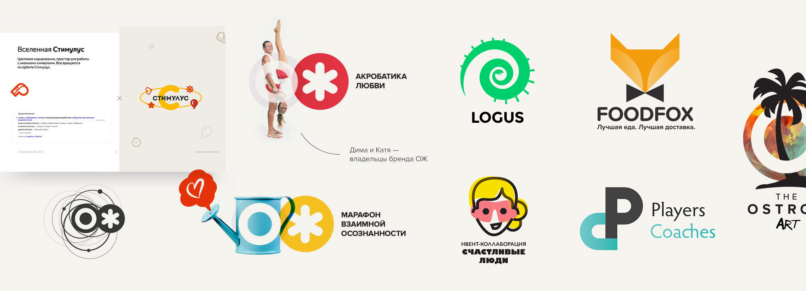
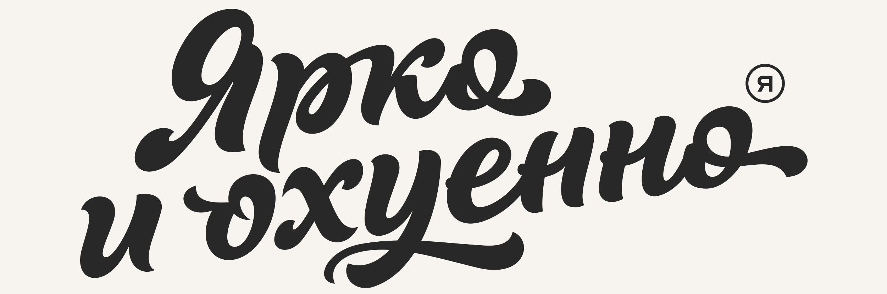
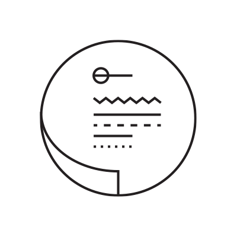

Про
фриланс
C 2012 года я работаю в 8—10 раз меньше, чем обычный дизайнер в офисе, успевая при этом делать около 5 проектов в месяц. И всё это с сохранением среднего московского дохода.
Этот текст не претендует на оригинальные открытия. Всё это — личный опыт и субъективные наблюдения.
Саммари
1
Делай так хорошо, чтобы клиент был искренне доволен результатом и хотел об этом рассказать своим друзьям — твоим потенциальным клиентам. Этот подход медленно становится привычкой, но навсегда качественно меняет жизнь.2
Делай так хорошо, чтобы быть искренне довольным самому: чувство удовлетворения от проделанной работы и гордость за неё — всё это дарит сильнейшую мотивацию и вдохновение.3
Предлагай и консервативное и новаторское решение — всегда есть шанс столкнуться с готовым к экспериментам заказчиком. Такой тип взаимодействия сильно развивает профессиональные навыки.4
Стоит мыслить за пределами дизайна. Использовать опыт из смежных областей. Высокая мода, абстрактная живопись, диджитал-арт, глянцевые журналы — подобные источники невероятно вдохновляют (особенно на смелые решения).5
Любое решение в процессе работы должно быть адекватно аргументированно. В идеале обеими сторонами.6
Держать слово. Тут всё просто. Это ценится. В мире этого не хватает. Хорошее прогнозирование темпов работы так же важно. Для этого нужно хорошо знать свои ресурсы и всегда просчитывать риски — нести ответственность выгодно.7
Интересные задачи решать интересно. Любую задачу можно сделать интересной. Улучшить что-либо, найти альтернативное решение, совместить несовместимое, сыграть на контрасте, уместно применить юмор и так далее.8
Всегда браться за сложные и непонятные проекты. Это лучший способ оставться в тонусе и развиваться. Для таких проектов, само собой разумеется, стоит закладывать дополнительные сроки и подстраховываться знакомыми специалистами. Замечу, что такой подход ни разу меня не подвел.Работая 1—2 часа в день, вдруг осознаешь, сколь многими интересными вещами можно заниматься: путешествовать (или просто жить в любой стране), много читать или, например, сочинять музыку:
В общем-то высвобождается главный ресурс — время.
Затем новый образ жизни начинает отдавать: качественно меняется подход к работе. Кроме логико-технической стороны и трендовых приемов, появляется цельный концептуальный подход. Работать становится значительно интереснее и, в целом, потребность в какой-либо дополнительной мотивации отпадает.

Еще наблюдения
1. Меньше официального тона, лучше дружественный, по возможности «на ты». Меньше корпоративной этики и формальностей. Словом, нормальное общение способствует повышению качества рабочих процессов.
2. Улучшать проект даже если это уже никому не нужно. Клиенту всегда приятно дополнительное внимание и сервис.
3. Всегда быть на связи. Powerbank, роуминг, вторая симка. Так же я обычно предупреждаю клиентов с которыми веду активные проекты о ближайших перелетах или приключениях в зонах с плохой связью. Всем нравится.
Самоорганизация
1. Никогда и ничего не откладывать.
2. Не засиживаться с одним проектом долго — делать несколько разных дел за день, менять вид деятельности. Это позволяет уставать заметно меньше. В первую очередь эмоционально. Кроме того часто идеи из одой области вдохновляют на интересные решения в другой.
3. Устраивать себе мобильный детокс. Этому меня нуачил Дима Юрченко (основатель ACCEL). Оставаться без связи на какое-то время: день-два в перерывах между проектами, в выходные дни. Мобильный детокс длинною в несколько недель — уже более серьезная практика, так же очень позитивно сказывающаяся на творческих способностях.
4. Бэкап всего и вся. Тут всё просто: папка «WORK» лежит в облаке (я использую Dropbox, Яндекс.Диск и Google.Drive). Сервисы недорогие, спокойный сон — бесценен. Еще пара внешних жестких дисков на всякий случай.

Что поменялось от начала фриланса к настоящему моменту
Тогда
Сначала я наслаждался возможностью просыпаться в полдень.
Сейчас
Сегодня мне нравится ложиться до полуночи, вставать в 7 и не пользоваться будильником.
Раньше я брался за всё подряд: полиграфия, наружка, интернет-магазины, случайные логотипы. И мечтал заниматься брендингом.
Теперь я с радостью пользуюсь многообразием опыта прошлого. И до сих пор с огромных интересом берусь за всё новое и непонятное. Но брендиг преобладает.
Эксперименты
Эта часть — своеобразная. Поясню: в какой-то момент мне захотелось добавить узнаваемости, меметичности и фамильярности. Так я придумал слоган «Ярко и охуенно», заказал каллиграфию и напечатал тираж визиток. Эффект получился неожиданный и прекрасный: теперь многие мои клиенты часто цитируют этот слоган при случае. Это мило.

Слоган не смущает ни крупные компании из Москвы-Сити, ни тем более маленькие стартапы — с ними мы вообще говорим на одном языке. С другой стороны, я не знаю какое количество клиентов ушло с сайта или выкинуло визитку с презрением. В любом случае, take it easy. Снобизм всё усложняет.


Презентация
Я люблю ездить в офисы — живое общение приносит мне много удовольствия. Для этого когда-то пришлось поучиться: почитать книги о коммуникации и набраться опыта в бизнес-среде. Этот скилл универсален и применим повсюду. Уметь разговривать — здорово.
Особенно важно то, как ты презентуешь свою работу. В 90% случаев я создаю PDF-презентацию с объяснением своей логики, процесса творческого поиска. Таким образом, заказчику проще прочувствовать логотип. Если говорить о сайтах и приложениях — мокапы, превью анимации интерфейсов — всё это стандартный набор методов подачи своей работы.
Я не программирую, но знаю на базовом уровне HTML, CSS и JS. Это важно с точки зрения коммуницирования с разработчиками. Я немного говорю на их языке, понимаю суть их работы и соотвестенно способен создавать дизайн лучше отвечающий техническим требованиям. Тут важно то, что сокращается время взаимодействия с разработчиками и я иду пить чай довольный.
Важная деталь — понимание прямой связи между качеством выполняемой работы (уровнем оказываемых услуг) и заработком. Работаешь лучше — получаешь больше. Работаешь качественно и делаешь чуть больше, чем договорились — формируешь позитивные отношения с клиентом на перспективу. Срабатывает очень быстро.

Коммуникация
Со многими клиентами мы становимся настоящими друзьями, благодаря чему, к примеру, я побывал на увлекательном проекте #TheOstrov, слетал на Соловки и почти забыл про поиск заказов.Пропадает формализм и рабочие процессы становятся заметно быстрее, изящнее и приятнее.
Словом, одни плюсы.
Репутация, подход
Прозрачное и понятное взаимодействие с клиентами. Это переписка в фейсбучике, если я в Москве — можно встретиться и выпить кофе. Понятная схема работы: 50% предоплаты, 3 попытки «начать с нуля» и манибэк (это примерно 6% случаев). В результате довольные и постоянные клиенты поддерживают сарафанное радио. А новые клиенты приходят уже расположенными к позитивному общению.Свобода
Макбук и айфон в режиме модема — лети в любую страну и живи там сколько угодно, делай все, что тебе угодно: спи целыми днями, не спи вообще, медитируй в горах или тусуйся на пляжах. Если ты уверен, что уложишься в сроки. А я уверен в этом всегда и на 100%.Любовь и самореализация
Как ни странно, этот подход в результате подарил мне глубокое осознание того, что я трепетно люблю свою работу: те знания, что она мне приносит, опыт, который с легкостью применяется в обычной жизни, радость от возможности создавать красивые вещи.Небольшое уточнение
За 12 лет фриланса я один раз на 2 месяца переносился в офис и это было еще более свободно и безумно, чем фриланс (привет, ZeroState). Во втором случае это был остров Полонского, что тоже скорее приключение, чем работа.
Вот, пожалуй, и всё.
Все мысли в этом тексте весьма просты, но тем не менее, для меня самого их ценность очевидна. Это тот простой набор правил, который позволяют мне с радостью и интересом делать свою любимую работу, зарабатывать хорошие деньги и тратить на это очень мало времени.
Можно перечитать выводы.
* * *
Если у нас совпадают взгляды и подход к работе и вам нужен дизайн чего-либо — вы знаете, что делать: